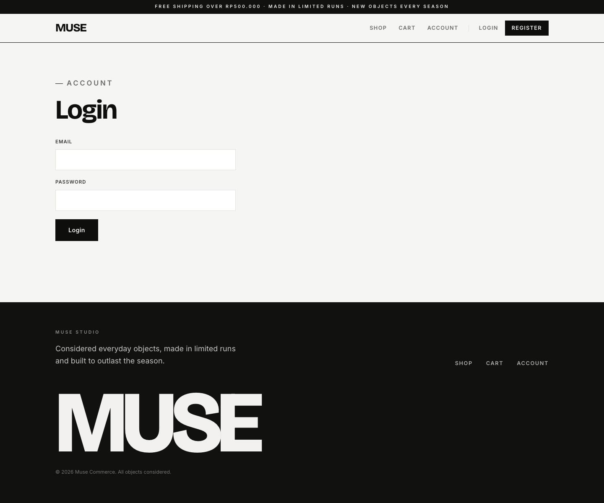
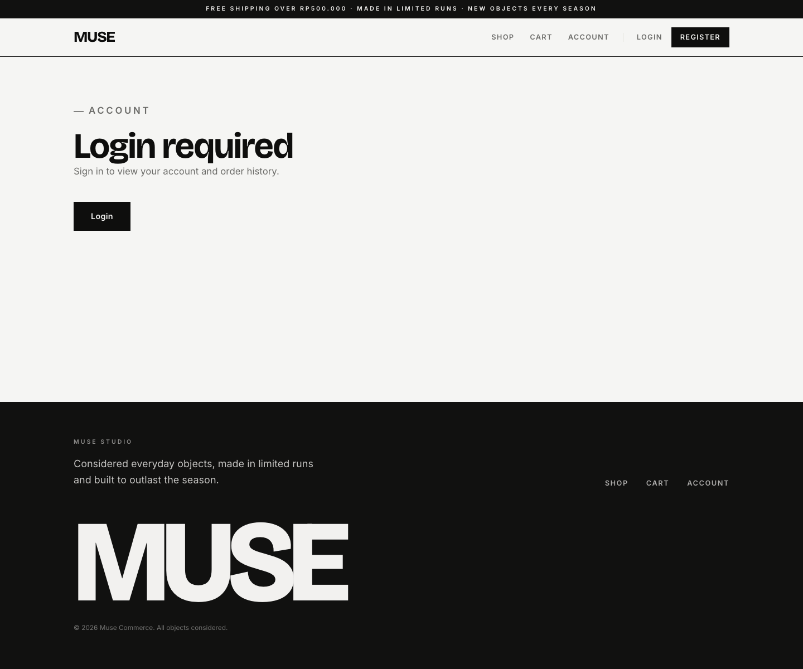

Account Requirement
Make login, register, account, and order history feel like part of the same retail system. Forms should be compact and clear. Account pages should be practical dashboards for orders, payment state, and delivery progress.
The current auth routes are already simple. The main work is shared form styling, quieter access states, and extracting account/order workspace pieces before route files get crowded.
Current Auth And MUJI Reference

Current Account And MUJI Reference


Differences To Resolve
| Area | Current MUSE | Reference behavior | Required MUSE change |
|---|---|---|---|
| Auth page | Simple form, but page uses current large shell and footer. | Form should feel like a utility task inside store context. | Build shared PublicAuthForm with compact labels and cedar action. |
| Register/login duplication | Two route-local forms with similar structure. | Consistent fields, messages, and button states. | Extract AuthFormShell or PublicAuthForm. |
| Account landing | Text page with one "View orders" action. | Practical workspace with order status and profile/account actions. | Build AccountDashboard with order summary cards and quick actions. |
| Order list | Existing route lists customer orders. | Rows should be compact and scannable with status labels. | Build CustomerOrderTable for desktop and cards for mobile. |
| Order detail | Payment action and details already exist. | Order detail should share checkout/payment summary patterns. | Reuse OrderSummary, PaymentStatusPanel, StatusBadge. |
| Access states | Large content pages. | Small store utility states with next action. | Restyle AccessRequired and account empty states. |
Component Requirements With Crops
PublicAuthForm
Shared form shell for login/register with compact fields, error message, loading button, and redirect copy.
- Already have
- Login/register handlers and fields.
- Get rid
- Duplicated auth form markup if it grows.
- Need
- Shared field/button/message styling and secondary link between login/register.
AccountDashboard
Customer workspace with profile summary, recent order, open payment, and links to orders/addresses.
- Already have
- Profile access and order routes.
- Get rid
- Text-only account landing page.
- Need
- Recent order query or reuse order list data.

CustomerOrderTable
Desktop order rows and mobile cards with order number, date, total, payment, fulfillment, and action.
- Already have
AccountOrdersroute andStatusBadge.- Get rid
- Route-local order row/card markup if present.
- Need
- Shared responsive table/card component.

CustomerOrderDetail
Order summary, shipping info, items, payment CTA/status, and fulfillment progress.
- Already have
AccountOrderDetail, payment helpers, order items.- Get rid
- Any duplicated payment/order summary markup.
- Need
- Reuse checkout
OrderSummaryandPaymentStatusPanel.

AddressBook
Saved address list and edit/add form that matches checkout address fields.
- Already have
- Checkout can load saved addresses.
- Get rid
- None in first pass.
- Need
- Customer address management route or account panel.
AccessRequiredState
Compact signed-out state for account, cart, checkout, and admin access gates.
- Already have
AccessRequiredcomponent.- Get rid
- Oversized access-state presentation.
- Need
- Variant props for cart, checkout, account, admin copy/actions.
Current Components Inventory
| Current piece | Status | Action |
|---|---|---|
Login, Register |
Keep/extract | Keep auth flow; extract shared form shell if duplication grows. |
Account |
Replace layout | Replace text-only landing with AccountDashboard. |
AccountOrders |
Keep/restyle | Use compact order table/card component. |
AccountOrderDetail |
Keep/restyle | Reuse payment/order summary components from checkout spec. |
StatusBadge |
Keep/restyle | Make badges smaller and calmer. |
AccessRequired |
Keep/restyle | Use for signed-out account/cart/checkout with less display scale. |
Data And Build Notes
Data We Have
User profile, auth state, customer orders, order detail, payment status, saved addresses in checkout.
Data We Need
Account address management, profile edit, recent order summary, wishlist if added later.
Simple First Pass
Restyle login/register/access states first, then extract order list/detail pieces when touching those routes.